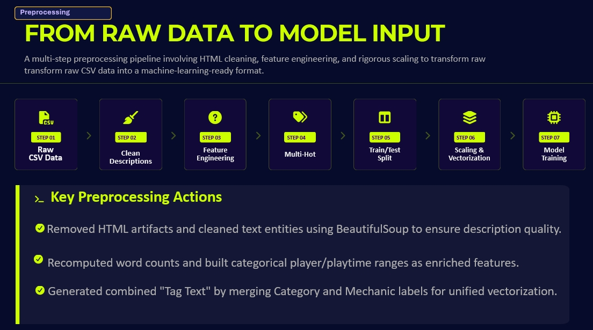
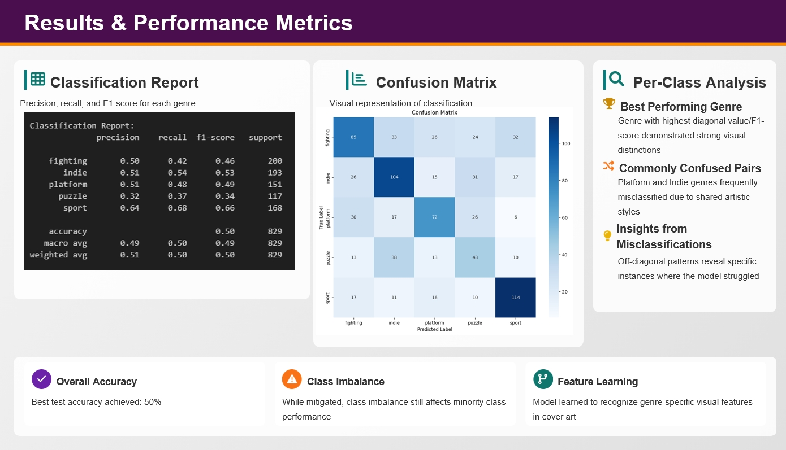
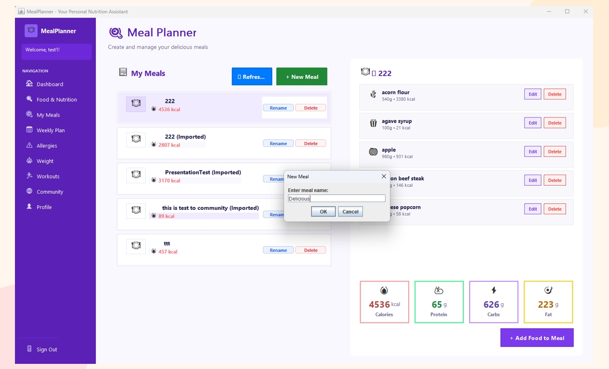
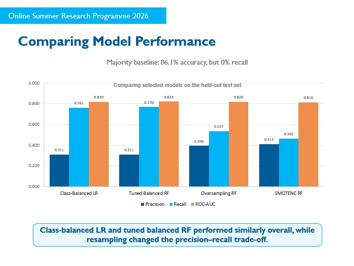

My Projects
Board Game Success Prediction

This project used machine learning to predict the success of board games using data from BoardGameGeek.
We cleaned and transformed numerical, text, and category data, then compared Linear Regression, Ridge, Lasso, and Random Forest models. Ridge Regression produced the best results among the models we tested.
Technologies used: Python, pandas, scikit-learn, TF-IDF, matplotlib
Game Cover Genre Classification

This deep learning project classified video games into five genres based on their cover images.
We fine-tuned a pretrained ResNet50 model using transfer learning and applied data augmentation and regularization to improve performance. We also created an interactive Hugging Face demo for users to test the model.
Technologies used: Python, PyTorch, ResNet50, Hugging Face
Meal Planner

Meal Planner is a web application that helps users organize meals based on their preferences and nutritional goals.
Users can create meal plans and manage meal-related information through the application. The project also uses a database to store and manage user data.
Technologies used: JavaScript, Database
Diabetes Risk Prediction

This research project used health survey data to predict diabetes or prediabetes risk from basic health indicators.
I compared Logistic Regression and Random Forest models and explored different methods for handling class imbalance. I also analyzed which health factors were most important to the model predictions.
Technologies used: Python, pandas, scikit-learn, Random Forest, Logistic Regression